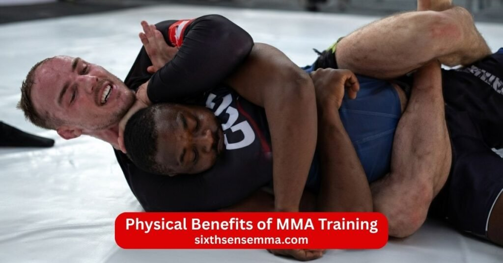

Top 10 Benefits of MMA for Fitness Strength and Self Defense
Benefits of MMA come from this complete mixed martial arts system that blends striking grappling and ground fighting into one powerful training style. MMA training combines Adult Muay Thai classes Brazilian jiu jitsu kickboxing wrestling and more so you develop real fighting ability self defense skills and total body fitness. Training sessions at a gym push you through intense physical work like punch spar takedown clinch and drill which build functional strength stamina and mental toughness. Many people join martial arts classes for MMA because it delivers strong physical fitness mental health benefits and practical self defense that work in real situations. Whether you want to get fit reduce stress and anxiety build confidence or master fighting MMA offers balanced gains inside and outside the gym that improve overall well being and help you handle life’s challenges with more strength and control.
1. Full Body Strength and Conditioning
MMA gives total body functional strength because it uses every part of you in training. Punch from stand up grapple on the ground and take down opponents all demand power from legs core arms and back. Intense physical training sessions build muscle and endurance at the same time. MMA fighters develop balanced strength that helps in life’s challenges and performance in any sport. The impact of MMA training creates a strong capable body that feels ready for anything.
2. Effective Weight Loss and Fat Burning
Training in MMA burns a lot of calories through constant movement and high effort. Sparring drill and rolling on the mat keep your heart rate up and create a big calorie deficit. Many people get fit and see physical transformation with less fat and more muscle when they train MMA regularly. A balanced diet combined with MMA training helps reduce weight steadily. The intense physical exertion makes MMA one of the best ways to burn fat and shape your body.
3. Improved Cardiovascular Endurance
MMA improves cardiovascular endurance because sessions mix aerobic and anaerobic work. You move non stop during training which strengthens your heart and lungs. Punch grapple and transition between positions keep oxygen flowing and build stamina. Over time you handle longer efforts without getting tired fast. The physical exertion in MMA training raises your fitness level and makes everyday activities easier.
4. Practical Self Defense Skills
MMA teaches practical self defense skills that work in dangerous situations. You learn to punch kick grapple and escape holds so you can stay safe if needed. Brazilian jiu jitsu helps on the ground while Muay Thai and kickboxing cover striking and clinch. Martial arts classes teach how to defend yourself against different attacks. The self defense side of MMA builds a type of confidence that extends beyond the gym and helps you feel secure in real life.
5. Better Balance and Coordination
MMA improves balance and coordination through constant changes in stance movement and position. You stay on your feet during striking then drop for takedowns or grapple on the mat. Training partners push you to react quickly which sharpens motor skills. Drill footwork transitions and clinch work make your body move smoother. Better balance and coordination from MMA help in sports daily tasks and overall physicality.
6. Increased Flexibility and Mobility
MMA training increases flexibility and mobility because it demands full range of motion in every part of the body. You stretch deeply during Brazilian jiu jitsu rolls to escape holds twist your hips for Muay Thai kicks and extend your legs for takedowns. Grapple work opens your shoulders and back while striking drills loosen your arms and core. Regular training sessions make joints move smoother and muscles longer which helps prevent stiffness. The constant change between stand up grappling and ground positions keeps your body adaptable. Many practitioners notice they move easier in daily life reach farther without strain and recover quicker from physical efforts after months of consistent MMA practice.
7. Stress Relief and Mental Focus
MMA provides strong stress relief because the intense physical exertion releases pent up energy and triggers endorphin that improve mood. During training you focus completely on the moment whether sparring grappling or drilling techniques which clears away worries about work or daily problems. The need to stay present sharpens mental focus and teaches you to block distractions. Training partners push you through tough rounds so you learn to stay calm under pressure. This mental clarity carries over outside the gym making it easier to concentrate on tasks handle stress and anxiety and feel more balanced overall. MMA also offers a healthy outlet to release tension and reset your mind after a hard day.
8. Boosted Confidence and Discipline
MMA boosts confidence because you prove to yourself what you can handle in training. Each milestone like landing a clean takedown escaping a bad position or surviving a tough sparring round builds a quiet belief in your abilities. You become confident in your body and skills which shows up as better posture stronger presence and less fear in challenging situations. Discipline grows from showing up consistently pushing through fatigue and following a structured routine. Martial arts classes teach self discipline through repetition and effort which spills into other areas like work eating habits and goals. The type of confidence from MMA comes from real achievement and helps you face life’s challenges with more control and determination.
9. Enhanced Speed and Reflexes
MMA enhances speed and reflexes through fast paced drills and live training. You practice quick punches takedowns and transitions that train your body to react instantly. Sparring forces you to read an opponent’s movement dodge strikes and counter fast which sharpens natural reflexes. Shadowboxing and pad work build hand speed while grappling improves reaction on the ground. Over time your nervous system gets better at processing information and moving without delay. This improved speed and reflexes helps in fighting ability and everyday situations like avoiding accidents or catching falling objects. The constant need to stay one step ahead makes MMA one of the best ways to develop quick responsive movement.
10. Stronger Mental Toughness
MMA builds stronger mental toughness because it puts you in uncomfortable situations regularly. You face fatigue pain from strikes or submissions and the fear of getting caught in a bad spot yet you keep going. Training partners and coaches push you to your limits so you learn discomfort is temporary and effort brings growth. Each time you overcome a hard round or push past exhaustion your mind gets tougher. This mental resilience helps you handle pressure stay composed and bounce back from setbacks inside and outside the gym. MMA training can help develop the grit needed for life’s challenges and creates a mindset that says you can endure more than you think.

Physical Benefits of MMA Training
MMA training pushes your body to work as one unit which leads to real changes in how strong fit and capable you become. Every session mixes striking grappling and ground work so no muscle group gets left out. The constant effort builds a body that handles real demands inside and outside the gym.
Muscle Development and Functional Strength
MMA training develops muscle throughout your whole body in a balanced way. Punching builds power in your shoulders chest arms and back while grappling and takedowns strengthen your legs core and grip. Clinch work and ground control add tension that targets smaller muscles for stability. You gain functional strength because the movements mimic real fights and daily tasks like lifting carrying or pushing. Unlike isolated gym exercises MMA creates muscle that works together explosively. Over time practitioners notice thicker arms defined core stronger legs and overall physical transformation that feels useful not just aesthetic.
Increased Stamina and Athletic Performance
MMA increases stamina because training sessions demand non stop effort across different energy systems. You switch quickly from explosive strikes to sustained grappling which trains both aerobic endurance for longer rounds and anaerobic power for bursts of intensity. Sparring and rolling improve how your body uses oxygen and recovers between efforts. Athletic performance rises as you move faster last longer and handle fatigue better. Many people find they run farther play sports harder and recover quicker in everyday activities after consistent MMA training. The mix of cardio conditioning and skill work turns average fitness into high level stamina that shows in peak performance.
Mental Benefits of MMA Training
MMA does more than build a strong body it sharpens your mind and character through constant challenges. Facing tough opponents training partners and your own limits creates mental growth that carries into all parts of life. The mental health benefits come from pushing through discomfort staying present and celebrating small wins.
Improved Focus and Concentration
MMA improves focus and concentration because every moment requires full attention. During sparring you must read your opponent’s stance anticipate strikes and react instantly. On the ground you concentrate on positions grips and escapes without room for distraction. Drill work and technique practice train your mind to stay locked on the task. This mental discipline spills over outside the gym making it easier to concentrate on work studies or daily responsibilities. The ability to block out noise and stay in the moment grows stronger with regular training sessions and helps reduce scattered thinking.
Building Confidence Through Skill Development
MMA builds confidence through steady skill development and real achievements. Each time you land a clean punch escape a submission or win a round against a training partner you prove to yourself what you can do. Learning to fight safely and effectively removes fear of dangerous situations and replaces it with quiet assurance. The process of mastering techniques from basic stance to advanced grappling creates a sense of progress that feels earned. This type of confidence grows deep because it comes from hard work and results not empty praise. Practitioners often stand taller speak up more and approach life’s challenges with greater belief in their abilities.
Who Can Benefit from MMA Training?
MMA training suits a wide range of people because it combines striking grappling and ground work into one complete system. The sessions adapt to different starting points and goals so anyone can join and see real gains. Whether someone wants basic fitness self defense skills or better performance in other sports MMA delivers results through consistent effort. The mix of Muay Thai Brazilian jiu jitsu kickboxing and wrestling makes it versatile for beginners and experienced athletes alike.
Beginners Starting Martial Arts Training
Beginners benefit greatly from MMA because it starts from the ground up without requiring prior experience. Classes teach fundamentals like proper stance footwork basic punches jabs kicks takedowns and simple ground positions. Trainers break everything down slowly so new people learn safely and build confidence step by step. MMA training helps beginners get fit improve coordination and learn practical self defense skills right away. The supportive community and training partners make the first sessions feel welcoming instead of intimidating. Many beginners join to stay fit reduce stress or feel safer and quickly notice better physical fitness strength and mental focus. MMA offers a clear path forward for those new to martial arts with visible progress in weeks.
Athletes Looking to Improve Performance
Athletes from other sports often choose MMA to take their performance to the next level. The intense physical training improves overall athletic ability through explosive power better stamina and quick transitions. Striking drills sharpen hand speed and timing while grappling builds grip strength core stability and takedown defense. MMA enhances reflexes balance and endurance that carry over to running team sports or individual disciplines. Many athletes use MMA as cross training to fix weaknesses like poor conditioning limited range of motion or slow reactions. Sparring and rolling teach how to stay calm under pressure and adapt fast. The functional strength gained from MMA helps athletes lift heavier move quicker and recover faster in their main sport. Serious competitors find MMA pushes them toward peak performance in ways isolated workouts cannot match.
Why Choose Sixth Sense MMA for MMA Training Program?
Sixth Sense MMA stands out as the top choice for MMA training program because it combines expert coaching clear progression a welcoming atmosphere and high quality facilities that support real growth. The program fits anyone from complete beginners to experienced fighters who want to improve striking grappling ground game and overall fighting ability. Every element of the gym focuses on helping you build physical fitness strength self defense skills and mental toughness in a way that feels safe motivating and effective.
Professional and Experienced MMA Coaches
The coaches at Sixth Sense MMA bring professional experience and deep knowledge of mixed martial arts. They have backgrounds in Muay Thai Brazilian jiu jitsu wrestling kickboxing and competition which means they teach proven techniques from multiple styles. During training sessions they watch closely correct form instantly and explain why certain moves work better. For example they adjust your stance for better balance guide your takedown defense or refine your clinch to make it stronger. Their experience helps prevent bad habits and injuries while pushing you toward peak performance. Beginners receive patient step by step instruction while advanced students get detailed feedback on strategy timing and conditioning. This professional guidance accelerates progress and makes every session count.
Structured Training for All Skill Levels
Sixth Sense MMA uses structured training programs designed to fit every skill level perfectly. Beginners start with fundamentals proper stance basic punches kicks simple takedowns and introductory grappling positions. Classes build slowly so new people learn safely and gain confidence without feeling overwhelmed. Intermediate levels add combinations transitions ground control and light sparring to develop flow and timing. Advanced programs include intense sparring strategy work high level grappling and conditioning specific to competition. The clear progression ensures you move forward logically without gaps or repetition. Small class sizes allow coaches to give personal attention and adjust drills to your current level. This structure keeps training focused measurable and motivating so you see steady improvement in fighting ability and fitness.
Safe and Supportive Training Environment
Safety and support define the training environment at Sixth Sense MMA. Coaches prioritize proper technique warm ups and recovery to reduce injury risk. They enforce rules during sparring to keep it controlled and educational. Training partners show respect and help each other grow creating a positive atmosphere where everyone pushes without ego. The gym fosters a sense of community where beginners feel welcomed and experienced fighters share knowledge. This supportive setting makes hard training enjoyable and sustainable. People stick with MMA longer because they feel encouraged not judged. The combination of safety focus and positive energy helps you push limits confidently and build lasting mental resilience.
Modern Equipment and Training Facilities
Sixth Sense MMA features modern equipment and facilities that make training effective and comfortable. Heavy bags thai pads focus mitts grappling dummies and mats stay in excellent condition for consistent use. The space has proper flooring good lighting ventilation and enough room for stand up grappling and ground work without feeling crowded. Protective gear like gloves shin guards mouthguards and wraps is available clean and well maintained. The setup supports all aspects of MMA from striking to takedowns and submissions. Modern facilities let you focus fully on skill training without distractions from old or unsafe equipment. This high quality environment supports better technique harder training and faster progress toward your goals.
Contact US
If you are ready to start MMA training improve your fitness build real self defense skills learn proper striking and grappling techniques or simply visit the gym to meet the coaches and see the facilities we are here for you.
- 817 S MacArthur Blvd #100 Coppell TX 75019 United States
- (469) 972 7800
- info@sixthsensemma.com
Conclusion
MMA training delivers powerful benefits that transform both body and mind in lasting ways. It builds full body strength functional muscle and peak conditioning while improving stamina cardiovascular endurance balance coordination flexibility and mobility. The intense sessions burn calories reduce fat and create real physical transformation that makes you stronger fitter and more capable in daily life. On the mental side MMA sharpens focus concentration mental resilience and self discipline. It reduces stress and anxiety releases endorphin for better mood and builds unbreakable mental toughness through facing tough challenges head on.
Follow Us on Social Media
Stay connected with Sixth Sense MMA through our social media channels. Follow us for class updates, training tips, and a closer look at our self defense community.
FAQ’s
MMA gives a complete workout that builds full-body strength stamina and functional muscle. You train striking grappling and ground fighting which improves cardiovascular endurance balance coordination and flexibility. It burns a lot of calories helps with weight loss and creates real physical transformation. Mentally MMA reduces stress and anxiety builds mental resilience and boosts confidence through skill development. You learn practical self-defense skills that work in dangerous situations. The supportive community and training partners make sessions enjoyable and help you stay consistent. Overall MMA improves physical fitness mental health and overall well-being.
The benefits of MMA include stronger total body conditioning better cardiovascular health practical self-defense skills increased mental toughness reduced stress and higher confidence. Training mixes intense physical exertion with skill development so you gain functional strength speed reflexes and discipline. It helps you get fit handle life’s challenges and feel more capable inside and outside the gym. Many people see improved focus concentration self-control and a sense of community from training partners. MMA offers mental health benefits like better mood from endorphin release and stronger resilience from pushing limits.
MMA transforms your body by building lean muscle functional strength and athletic conditioning across every major group. Striking develops power in arms shoulders and core while grappling and takedowns strengthen legs back and grip. The constant movement improves cardiovascular endurance stamina and oxygen uptake. You burn fat quickly see better muscle definition and gain explosive power for real-world tasks. Flexibility mobility balance and coordination improve from diverse positions and transitions. Overall your body becomes stronger more durable fitter and better prepared for physical demands.
Three times a week is enough for MMA if your goals are general fitness stress relief basic skill improvement and staying active. You still get good cardio strength gains coordination and self-defense progress. Results come slower than five or six days but consistency matters more than frequency at first. Add light home drills shadowboxing or mobility work on off days to keep momentum. Eat well rest properly and focus on quality sessions. For faster skill development competition or major physical changes more days help but three sessions a week works well for most people especially beginners or busy adults.
A trained boxer usually hits harder with punches because boxing focuses solely on hand striking technique power generation and speed. Boxers spend years perfecting punch mechanics so their hooks crosses and uppercuts carry maximum force. MMA fighters hit hard too but spread training across kicks knees elbows grappling and ground work so pure punching power often falls short compared to a dedicated boxer. In a pure punch exchange a skilled boxer typically lands heavier shots but MMA adds more weapons overall.
MMA can be better than a traditional gym for many people because it combines intense cardio strength training skill learning and self-defense into one session. It feels more engaging than repetitive machines or lifts and burns calories faster due to constant movement sparring and transitions. MMA also builds functional strength reflexes and mental toughness that carry over to real life. A standard gym might allow more targeted muscle building with heavy weights but MMA offers practical fighting ability variety and higher motivation for those who enjoy combat sports. It depends on your goals if you want fun effective full-body work with real-world application MMA often wins.
The Bible does not mention MMA or mixed martial arts directly since it is a modern sport. Some Christians point to verses about self-control discipline and treating the body as a temple like 1 Corinthians 6:19-20 or 9:27 which encourage physical training but warn against excess or violence. Others see MMA as a form of exercise and competition that builds character resilience and self-defense skills without issue. Views vary by personal belief some avoid it due to perceived violence while others participate seeing it as healthy competition. Ultimately it comes down to individual conscience and how one approaches the sport.
MMA was not fully banned nationwide in the US but faced heavy restrictions and bans in many states during the 1990s. Early UFC events were seen as brutal no-holds-barred fights with minimal rules which led to criticism from politicians and media. Some states like New York banned it calling it human cockfighting. The lack of unified rules safety measures and the violent image caused bans or refusals to sanction events. By the late 1990s and early 2000s the UFC worked with regulators added weight classes time limits gloves and referee intervention which improved safety and led to legalization in most states.
Vaseline in a fight means fighters apply petroleum jelly to their face usually around the eyes eyebrows and cheeks before a match. It reduces friction so punches and elbows slide off instead of cutting skin which helps prevent facial lacerations. Cutmen use it between rounds to keep cuts closed and stop bleeding. In most promotions fighters can only apply it before the fight or between rounds with referee approval. It is a common legal tactic to protect skin during striking exchanges.
MMA can feel more painful than boxing because it includes strikes to legs body head plus grappling submissions and ground strikes. You take punches kicks knees elbows takedowns and joint locks which cause varied types of pain like shin bruises joint strain or submission pressure. Boxing focuses mainly on head and body punches so pain is more concentrated. MMA fighters often say the ground game and leg kicks add extra discomfort but pain tolerance builds with experience in both. It varies by person and fight style but MMA’s wider range of attacks makes it painful in more ways.
Hammer fist is illegal in most MMA rules because it is considered a downward strike with the bottom of the closed fist that can cause serious head or neck injury. Unified Rules of MMA prohibit strikes to the back of the head spine or using the hammer fist in certain ways especially when a fighter is grounded. The move risks concussions or spinal damage so referees stop it to protect fighters. Some promotions or amateur levels allow limited hammer fists but professional rules generally ban it for safety.
No single martial art reliably beats MMA in a mixed rules fight because MMA combines the best elements from many styles. A specialist like a pure boxer wrestler or jiu-jitsu practitioner can win if they exploit weaknesses but MMA fighters train all areas striking grappling takedowns and ground work. Styles like wrestling for control BJJ for submissions or Muay Thai for striking give strong advantages but a well-rounded MMA fighter usually covers those bases. In real competition the individual skill training quality and strategy decide the winner more than the art itself. MMA’s complete approach makes it hard for one discipline to dominate consistently.
Train with us in Coppell
The first class is free. Shorts, a t-shirt and a water bottle. We lend the rest.
Book a free class